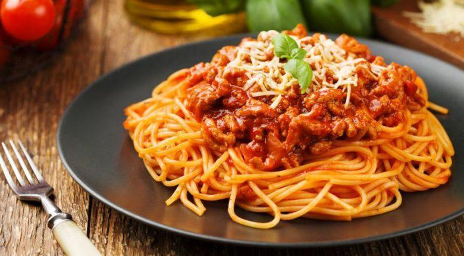

Molho à bolonhesa é um molho feito com carne bovina moída, tomate e outros adicionais.
Coloque uma panela com água salgada para ferver, adicione o espaguete e cozinhe-o de acordo com as instruções do pacote. Em uma panela pequena, coloque o azeite extra-virgem para esquentar. Coloque a cebola picada na panela e refogue por 2 minutos. Em seguida coloque o alho picado e refogue por mais 1 minuto. Coloque a carne moída para fritar. Tempere a carne com sal e pimenta á gosto. Mexa a carne para dourar de todos os lados. Coloque na panela o molho de tomate, o molho inglês, a salsa picada, o manjericão e o champignon. Mexa sem parar. Quando o espaguete estiver pronto, escorra-o e coloque em uma tigela. Despeje o molho de tomate quente sobre o espaguete, distribuindo uniformemente por todo o macarrão. Polvilhe o queijo ralado por cima do molho de tomate. Sirva imediatamente.